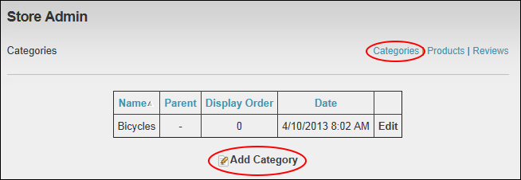
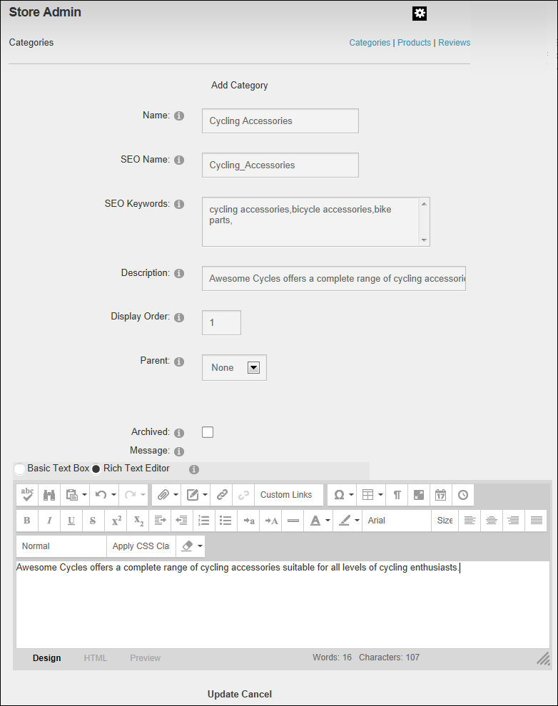
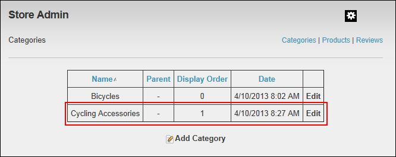

Adding a Product Category
Catalog Managers can to add a product category to the store using the Store Admin module.
- On the Store Admin module, click the Categories link.
- Click the
 Add Category link.
Add Category link.

- In the Name text box, enter a name for the category.
- Optional. In the SEO Name text box, enter the search engine optimization name to be appended to the URL for this category. Only alpha-numerical characters without spaces can be entered.
- Optional. In the SEO Keywords text box, enter keywords separated by a comma.
This value will be inserted in the META Keywords
when the catalog page is displayed.
The SEO Feature setting must be enabled
in the Store settings for works.
- Optional. In the Description text box, enter a full description of the category.
- In the Display Order text box, enter a number to set the order of this category. E.g. Enter 1 to display this product first, Enter 2 to display this product second, etc. Leave the field blank to display categories in the order they are created.
- At Parent, leave this field set to None - OR - Select the name of parent category from the drop down list.
- Optional. In the Message Editor, enter a message for this category. This message displayed near the top of the Store Catalog when a customer selects the category.

-
Click the Update button. You can now view the newly added category details by click the category name in the Store Menu module. This displays the category name and description in the Store Catalog module as shown below.

The Newly Added Category